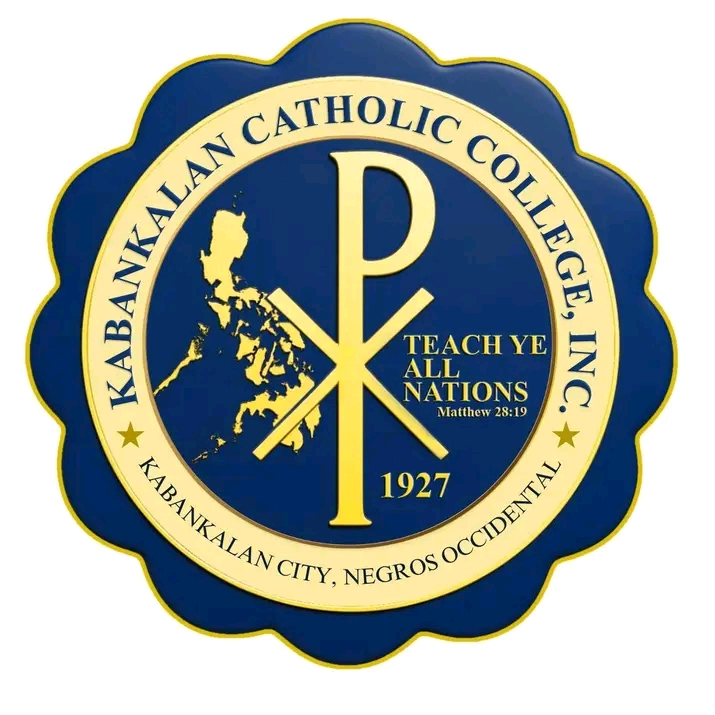
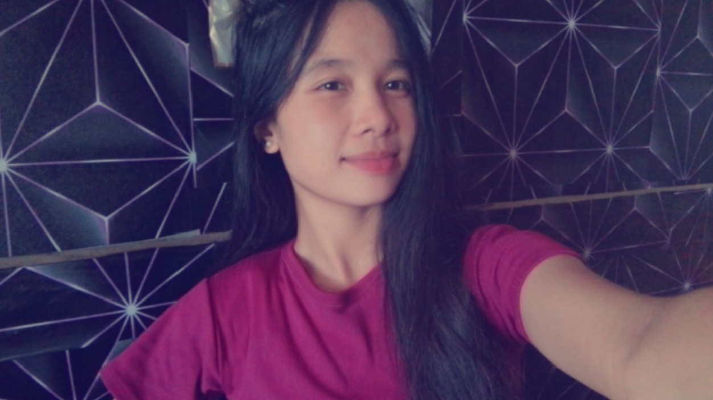

01
Guitar
Finding rhythm, patience, and a little courage in every chord.
↗Personal portfolio · 2026
I’m an Information Technology student who is passionate about technology, creativity, and learning new things. I enjoy exploring different ideas, creating projects, and improving my skills in web and app development.
This portfolio showcases my work, experiences, and progress as an IT student. It represents what I have learned, what I can do, and how I continue to grow in the world of technology.


I am Vilma M. Quillano, a Bachelor of Science in Information Technology student at Kabankalan Catholic College.
I enjoy exploring technology, learning new skills, and expressing my creativity through different projects. I see every experience as a chance to improve, discover new ideas, and turn what I learn into something meaningful.
The things I love outside the screen help shape how I see, think, and create.
Finding rhythm, patience, and a little courage in every chord.
↗Exploring colors, shapes, and creative ways to tell a story.
↗Collecting new perspectives one page and one idea at a time.
↗A collection of my projects and activities that showcase my creativity, skills, and learning journey in Information Technology.
A personal website created to showcase my background, interests, skills, and projects through a simple and creative design.
View project story ↗Feel free to explore and get to know more about me.